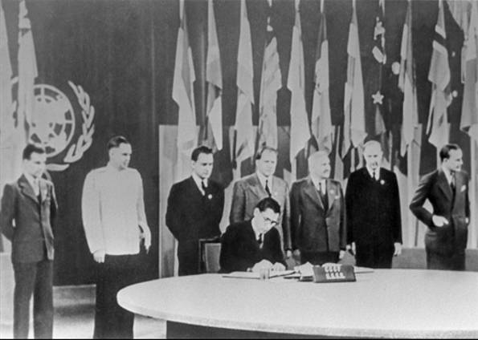

Descubra as histórias esquecidas do mundo
A Segunda Guerra Mundial (1939-1945) foi um dos conflitos mais destrutivos da história, resultando em cerca de 70 a 85 milhões de mortes e grande devastação econômica e social. As atrocidades, incluindo o Holocausto e os bombardeios atômicos, evidenciaram a necessidade de um sistema internacional para prevenir novas guerras.
A Liga das Nações foi criada após a Primeira Guerra Mundial para promover a paz, mas falhou em conter agressões de potências como Alemanha, Itália e Japão. A ausência dos EUA e a falta de um mecanismo de imposição efetivo foram fatores determinantes para sua ineficácia.
Em 1945, 50 países se reuniram em São Francisco para discutir a criação de uma nova organização internacional. O resultado foi a Carta das Nações Unidas, assinada em 26 de junho e ratificada em 24 de outubro, data oficial da fundação da ONU.
